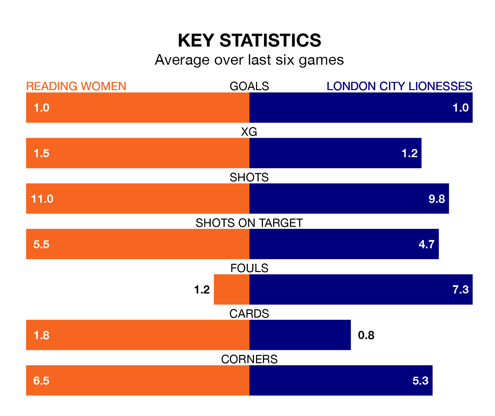

Struggling Reading Women face London City Lionesses at the Select Car Leasing Stadium on Sunday looking to build on a win in their last league outing.
After securing all three points with a 1-0 victory over Sunderland Women on February 4, the Royals sit ninth in the FA Women's Championship.
They travel to play a London City side 10th in the standings, who were held in their last match, 2-2 against Durham Women, on February 18.
Reading are in disappointing form in the FA Women's Championship, with one win and three draws from their last six games.
With no wins and two draws over that period, London City's form is worse – they have taken two points from 18, compared to the Royals's six.
With Emily Orman between the sticks, the home side can rely on one of the league's safest pair of hands. She has kept five clean sheets in her 12 appearances this season, and only one other 'keeper – Sunderland Women's Claudia Moan – has been able to prevent the opposition scoring on more occasions in the FA Women's Championship.
In the Lionesses's net, Grace Moloney has three clean sheets in 14 games. She has conceded a goal every 60 minutes, 30% more often than the 77 minutes between goals for Orman.
In the last 10 years, Reading and London City have played each other on eight occasions. Reading won six of them and they drew twice.
On average, the Royals scored 3.0 goals and the Lionesses 0.4 in those matches.
Their last meeting was on September 10, when they played out a 1-1 draw.
With 13 goals in 13 games so far this season, Reading are the league's second-lowest scorers with 1.0 goals per game. But they are conceding fewer than average too, letting in 17 goals at a rate of 1.3 per game.
The visitors are also below average scorers, with 1.0 goal per game, compared to a league average of 1.4. They have conceded 1.7 goals per game.
Updated: 12:18 (UTC), 19/02/24